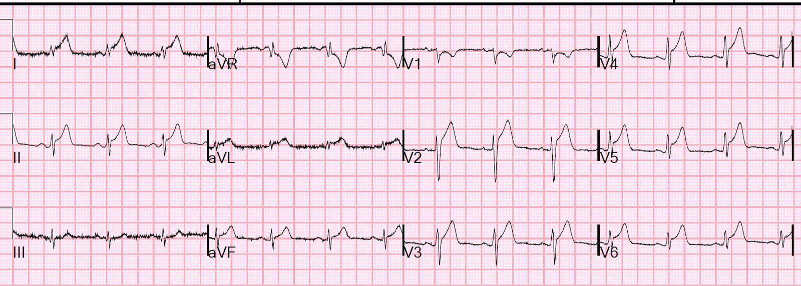
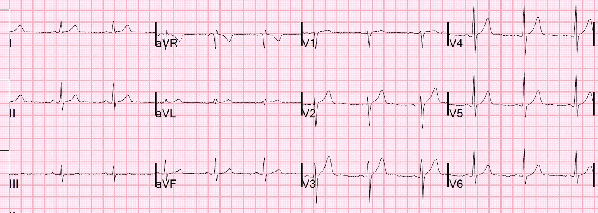
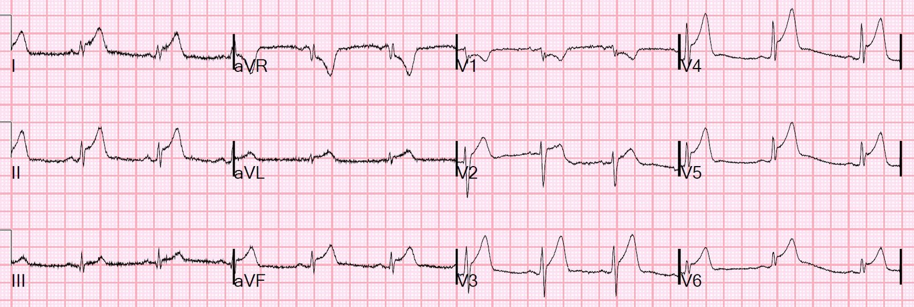
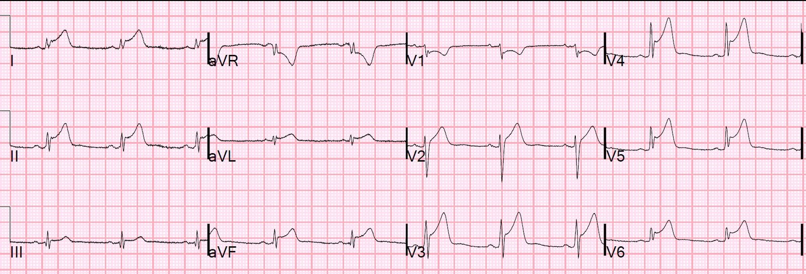
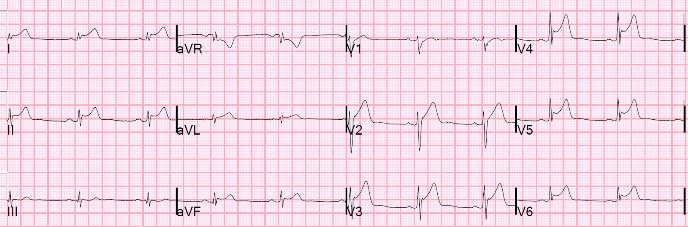
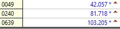
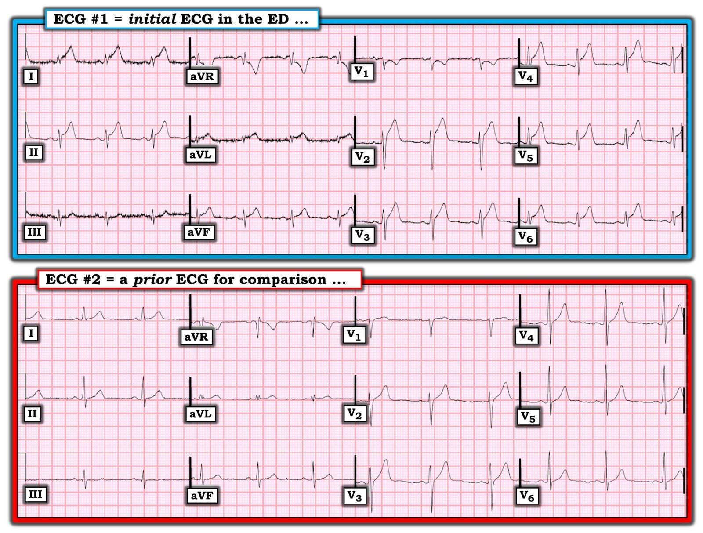
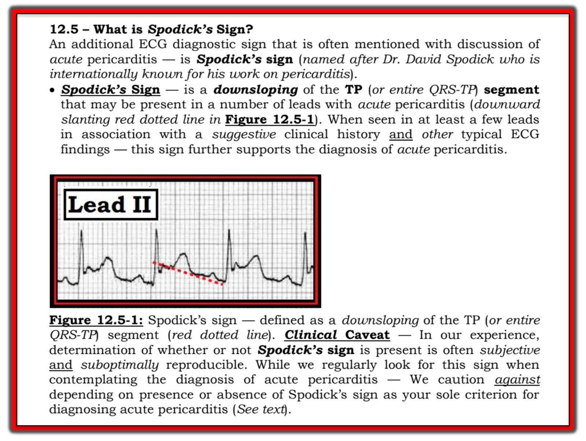

10/01/2020 — Triệu chứng nhiễm virus, rồi đau ngực cấp và điện tâm đồ này. Bạn sẽ làm gì?
Bản dịch tiếng Việt của bài "Viral symptoms, then acute chest pain and this ECG. What do you do?" – Dr. Smith’s ECG Blog. Giữ nguyên toàn bộ 10 hình ảnh và 1 video của bản gốc.
Một nam giới cuối độ tuổi 30 đến khám vì sốt, đau họng, đau đầu, nôn và đau nhức toàn thân (“đau nhức xương”) trong 2 ngày.
Anh ấy đến khoa cấp cứu (ED) vì đột ngột đau ngực dữ dội, đau nhói, kiểu màng phổi (nhưng không thay đổi theo tư thế), sau xương ức và ở vùng ngực trái từ giữa đến dưới.
Anh ấy được ghi điện tâm đồ này tại thời điểm 0


Có một điện tâm đồ cũ để so sánh:


Diễn giải:
Có ST chênh lên lan tỏa đáng lo ngại, hoàn toàn có thể do LAD "vòng qua mỏm" (wraparound) gây nhồi máu cơ tim thành trước và thành dưới. Nó cũng có thể do viêm màng ngoài tim hoặc viêm cơ tim, nhưng tôi luôn nói rằng “chẩn đoán viêm màng ngoài tim là tự chuốc lấy rủi ro.”
Nếu bạn nghĩ đây có thể chỉ là tái cực sớm, ta có thể dùng công thức để đánh giá:
QTc = 358
RAV4 = 7
QRSV2 = 15
STE60V3 = 4
Giá trị công thức = 18.72, phù hợp với tắc LAD.
Bệnh cảnh lâm sàng rất gợi ý viêm cơ-màng ngoài tim. Nhưng luôn phải nhớ rằng nhồi máu cơ tim cấp là bệnh lý phổ biến hơn nhiều so với viêm cơ tim hay viêm màng ngoài tim.
Những suy nghĩ khác:
Không có đoạn PR chênh xuống bất thường.
Sóng T cao hơn mức dự kiến đối với viêm cơ-màng ngoài tim, và điển hình hơn cho nhồi máu cơ tim cấp.
Vị trí ở V2-V4 nhiều không kém ở thành dưới và thành bên là điều bất thường đối với viêm cơ-màng ngoài tim.
Khám không thấy tiếng cọ màng ngoài tim
Bạn muốn làm gì?
Siêu âm tim tại giường được làm ngay lập tức. Đây là mặt cắt trục ngắn cạnh ức, do một chuyên gia thực thụ về siêu âm tim tại giường ở khoa cấp cứu thực hiện:
Dường như không có rối loạn vận động thành trước.
Điều này làm cho nhồi máu cơ tim thành trước ít có khả năng hơn, nhưng rối loạn vận động thành rất khó nhận định, và siêu âm tại giường (POCUS) rất kém trong việc phát hiện chúng.
Họ không thấy rối loạn vận động thành (WMA) ở bất cứ đâu.
Không có tràn dịch.
Troponin lần đầu trả về 43.2 ng/mL (rất cao)!
Tại thời điểm này, tôi sẽ cân nhắc nghiêm túc việc kích hoạt phòng thông tim, hoặc ít nhất là làm siêu âm tim chính thức có cản âm.
Một điện tâm đồ khác được ghi lúc 1.5 giờ:


Troponin lần 2 trả về 81.78 ng/mL
Một điện tâm đồ khác được ghi lúc 3.5 giờ:


Troponin lần 3 trả về 100.2 ng/mL:
Một điện tâm đồ khác ghi lúc 8 giờ


CRP 204 mg/L (bình thường dưới 5): điều này ủng hộ mạnh mẽ căn nguyên nhiễm trùng.
Đây là diễn biến troponin:


Các bác sĩ điều trị tin chắc đây là viêm cơ tim và không bao giờ đưa bệnh nhân lên phòng thông tim.
Tôi hẳn đã rất lo lắng về điều này, nhất là sau khi phát hiện rối loạn vận động thành trên siêu âm tim chính thức:
Đây là siêu âm tim chính thức có cản âm được làm muộn hơn:
Phân suất tống máu thất trái ước tính là 45%.
Chức năng tâm thu thất trái giảm nhẹ.
Rối loạn vận động thành khu trú - giảm động thành dưới đoạn xa.
Rối loạn vận động thành khu trú - giảm động thành dưới-bên
Điều này chứng tỏ POCUS KHÔNG đủ nhạy để phát hiện rối loạn vận động thành.
Tôi nhẹ nhõm khi thấy kết quả MRI này:
NHẬN ĐỊNH MRI
1) Chức năng thất trái giảm nhẹ, không có rối loạn vận động thành khu trú.
2) Kích thước tất cả các buồng tim bình thường.
3) Ngấm thuốc muộn cơ tim lan rộng, không ảnh hưởng lớp dưới nội tâm mạc,
phù hợp với viêm cơ tim. Cũng có ngấm thuốc màng ngoài tim kín đáo
gợi ý viêm màng ngoài tim, không có tràn dịch màng ngoài tim.
Những điểm cần học:
1. Viêm cơ tim có thể trông giống hệt nhồi máu cơ tim cấp trên điện tâm đồ, với troponin và rối loạn vận động thành giống hệt. Tôi cho rằng thật mạo hiểm khi mặc định là viêm cơ tim chỉ dựa trên bệnh cảnh lâm sàng. Có lẽ tôi quá thận trọng.
2. POCUS không đủ để loại trừ rối loạn vận động thành.
Một ca tương tự khác:
Teenager with chest pain and slightly elevated troponin. What happens then? (Thiếu niên đau ngực và troponin tăng nhẹ. Rồi chuyện gì xảy ra?)
Các ca nhồi máu cơ tim cấp ban đầu bị chẩn đoán nhầm là viêm cơ tim hoặc viêm màng ngoài tim:
24 yo woman with chest pain: Is this STEMI? Pericarditis? Beware a negative Bedside ultrasound. (Phụ nữ trẻ đau ngực: Đây có phải STEMI? Viêm màng ngoài tim? Cẩn thận với siêu âm tại giường âm tính.)
“Pericarditis” strikes again (“Viêm màng ngoài tim” lại ra đòn)

===================================
BÌNH LUẬN CỦA TÔI, bởi KEN GRAUER, MD (10/1/2020):
===================================
Tôi thích ca này vì nó chứng minh điều chúng ta vẫn biết = Y học không chắc chắn 100%. Dù cố gắng đến đâu — chúng ta không bao giờ đạt được sự “hoàn hảo” — mà thay vào đó, chúng ta hướng tới việc tiến gần nhất có thể đến chẩn đoán hoặc loại trừ những khả năng lâm sàng đáng lo ngại nhất, theo cách tiết kiệm thời gian nhất và ít gây hại nhất có thể (tức là, mặc dù nguy cơ từ thông tim cấp cứu là nhỏ trong tay người có kinh nghiệm — tác dụng bất lợi vẫn có thể xảy ra, nên thủ thuật này không lành tính 100%).
- Để rõ ràng — tôi đã sao lại trong Hình 1 điện tâm đồ ban đầu của ca này ( = điện tâm đồ #1) — và bản ghi trước đó (để so sánh) của bệnh nhân này (điện tâm đồ #2).


Về điện tâm đồ #1: Tôi đồng ý với những điểm cốt yếu trong diễn giải của Dr. Smith về bản ghi này. Tôi sẽ bổ sung thêm một số điểm:
- Nhịp xoang đều, tần số ~80-85/phút.
- Có nhiễu đường nền đáng kể ở một số chuyển đạo. LƯU Ý: Tôi thấy cần nhắc đến mức độ nhiễu này — vì nó thực sự ảnh hưởng đến việc diễn giải của chúng ta trong ca này (tức là, khiến gần như không thể đánh giá liệu một số chuyển đạo then chốt có ST chênh lên cũng biểu hiện đoạn PR chênh xuống hay không …).
- Tất cả các khoảng (PR/QRS/QTc) đều bình thường. Trục mặt phẳng trán không xác định (tức là, QRS gần như đẳng điện ở cả 6 chuyển đạo chi). Không có lớn buồng tim.
Về Thay đổi Q-R-S-T — Không có sóng Q — tăng tiến sóng R có thể hơi chậm (tức là, sóng R trở nên cao hơn độ sâu sóng S ở giữa V4 và V5 — với sóng S tồn tại kéo dài đến tận chuyển đạo V6). Dấu hiệu nổi bật nhất là ST chênh lên rõ, lan tỏa không kèm bất kỳ ST chênh xuống soi gương nào (ngoại trừ ở các chuyển đạo aVR và V1 — cả hai đều thường có ST-T chênh xuống trong viêm màng ngoài tim).
- Các dấu hiệu điện tâm đồ trên điện tâm đồ #1 phù hợp với viêm màng ngoài tim cấp (hoặc viêm cơ-màng ngoài tim cấp) gồm: i) ST chênh lên dốc lên ở hầu hết các chuyển đạo (ở 9/12 chuyển đạo trên điện tâm đồ #1 = mọi chuyển đạo trừ III, aVR và V1); ii) Hình dạng ST-T ở chuyển đạo II giống ở chuyển đạo I (trong khi với nhồi máu cơ tim cấp, hình dạng ST-T ở chuyển đạo II giống chuyển đạo III — và không giống chuyển đạo I ); iii) Không có sóng Q, và không hề có ST chênh xuống soi gương vốn thường thấy khi tắc LAD đoạn gần (mặc dù ST chênh xuống soi gương ở thành dưới có thể vắng mặt khi tắc LAD ở đoạn xa hơn!); iv) Tỷ số ST/sóng T tăng (>0.25) ở chuyển đạo V6; và, v) Tôi nghĩ ( = ý kiến của tôi) có một mức đoạn PR chênh xuống (nhẹ-nhưng-có-thật) (ở các chuyển đạo II, V2 đến V5) + đoạn PR chênh lên ở aVR trên điện tâm đồ #1 (được củng cố bởi sự vắng mặt của các thay đổi đoạn PR này trên điện tâm đồ #2, là bản ghi trước đó).
- Cuối cùng — bệnh sử lâm sàng của ca này ( = một nam giới trưởng thành tương đối trẻ, có tiền sử sốt 2 ngày + triệu chứng nhiễm virus + đau ngực kiểu màng phổi) — rõ ràng phù hợp với viêm màng ngoài tim cấp. Troponin tăng rõ rệt khiến ca này phù hợp với viêm cơ-màng ngoài tim cấp.
- LƯU Ý — Hầu như tất cả các điểm trên (cùng với phần tổng quan về các giai đoạn điện tâm đồ của viêm màng ngoài tim cấp) đều được trình bày theo cách tương tự trong Bình luận của tôi ở cuối bài của Dr. Smith ngày 13 tháng Mười Hai năm 2019.
ĐIỂM MẤU CHỐT — Có rất nhiều sự khôn ngoan trong câu nói của Dr. Smith, “Chẩn đoán viêm màng ngoài tim (hay viêm cơ-màng ngoài tim) là bạn tự chuốc lấy rủi ro” — và, tôi đã học được từ Dr. Smith cách nhắc lại câu này mỗi lần gặp một ca như ca này!
- Dù vậy — tôi hoàn toàn hiểu niềm tin chắc chắn của các bác sĩ tại giường bệnh rằng bệnh nhân này bị viêm cơ tim cấp chứ không phải OMI cấp (dù tôi thực sự rất muốn được nghe thấy một tiếng cọ màng ngoài tim khi nghe tim để xác nhận). Không nghe thấy tiếng cọ.
- Tôi tin rằng việc so sánh bản ghi trước đó ( = điện tâm đồ #2) với bản ghi ban đầu tại khoa cấp cứu ( = điện tâm đồ #1) càng ủng hộ viêm cơ tim cấp là chẩn đoán khả dĩ (mặc dù việc so sánh này không loại trừ khả năng OMI cấp).
- NHƯNG — “Phải có mặt ở đó mới biết”. Rất có thể tôi cũng đã tin chắc bệnh nhân này bị viêm cơ tim cấp dựa trên các dữ kiện được cung cấp. Dù vậy, ý của Dr. Smith rất xuất sắc — cụ thể là, dấu hiệu điện tâm đồ của OMI cấp và viêm cơ tim cấp có thể giống hệt nhau — và, dấu hiệu lâm sàng cũng có thể tương tự — đến mức đôi khi cách duy nhất để phân biệt chắc chắn giữa 2 bệnh này trong tình huống cấp có thể là thông tim cấp cứu. Việc này có thể đầy thách thức! — và đôi khi bạn cần nhiều sự chắc chắn hơn cho chẩn đoán giả định của mình …
CÂU HỎI Điểm cộng: Vậy — CHI NÀO là nguồn gây nhiễu trên điện tâm đồ #1?
TRẢ LỜI: Do các dao động đường nền do nhiễu lớn nhất ở chuyển đạo chuẩn I và III (và không có ở chuyển đạo II) — và, nhiễu mạnh nhất ở chuyển đạo tăng thế aVL (và có nhưng giảm ở các chuyển đạo aVR và aVF) — nên tay trái chính là nguồn gây nhiễu.
- LƯU Ý: Học cách nhận ra nhanh CHI NÀO là nguyên nhân gây nhiễu thực sự có ý nghĩa lâm sàng — vì bạn nhận ra càng sớm, bạn càng có thể khắc phục vấn đề nhanh hơn (tức là, tiếp xúc điện cực bị lỗi/tiếp xúc với da không đủ — hoặc có thể run ở chi đó).
- Về cách tiếp cận của tôi để nhận ra nhanh chi gây nhiễu — Xin XEM Bình luận của tôi ở cuối bài của Dr. Smith ngày 27 tháng Chín năm 2019.
T.B. (P.S.) (Lời thú nhận của tôi): Tôi vốn không định nhắc đến dấu hiệu Spodick như một dấu hiệu điện tâm đồ của viêm màng ngoài tim cấp — nhưng trước câu hỏi của Matt C bên dưới, giờ tôi thấy cần phải làm vậy.
- Tôi minh họa và giải thích dấu hiệu Spodick trong Hình 2. Như tôi giải thích trong chú thích của Hình này — dù tôi hoàn toàn thừa nhận danh tiếng toàn cầu của Dr. David Spodick trong lĩnh vực này — theo kinh nghiệm của tôi ( = ý kiến của tôi) — dấu hiệu này chưa giúp ích gì cho tôi.
- Dù vậy — tôi thực sự đồng ý với Matt rằng dấu hiệu Spodick rõ ràng có vẻ hiện diện trên các bản ghi ở trên. (Chỉ là đây không phải lý do khiến tôi nghĩ điện tâm đồ #1 cho thấy viêm cơ-màng ngoài tim cấp).
- Tôi trích Hình 2 từ Mục 12 về Viêm màng ngoài tim, trong ECG-2014-ePub của tôi. Với những ai muốn đọc thêm “Quan điểm của tôi” về chẩn đoán điện tâm đồ viêm màng ngoài tim cấp — BẤM VÀO ĐÂY để tải Mục này.

